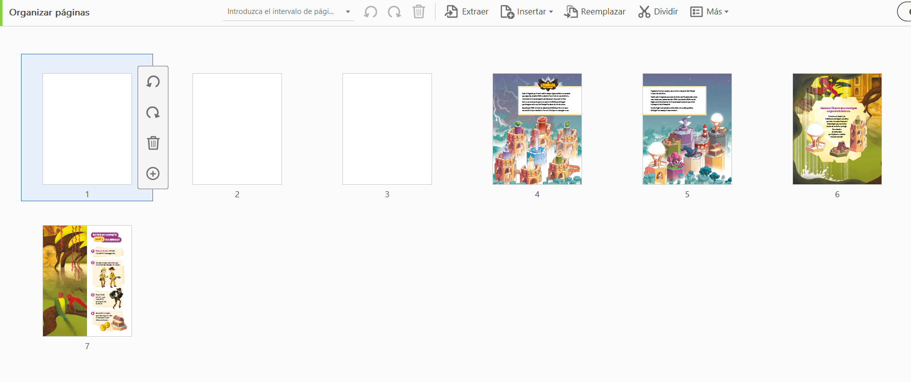
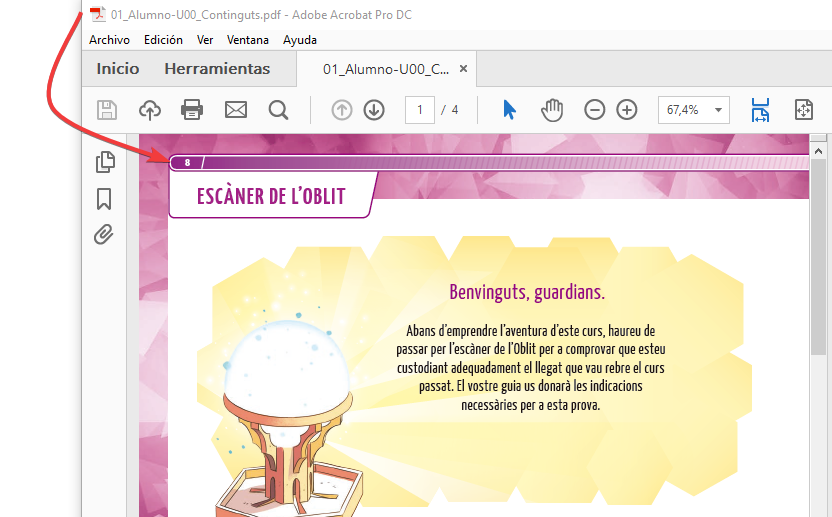

La herramienta PDF to HTML del CAT permite transformar los contenidos en PDF de los libros en HTML para comenzar con el proceso de digitalización y montaje de los mismos para la plataforma digital.
En este manual vamos a ver como se deben tratar los PDF para iniciar todo el proceso dado que este es un procedimiento sencillo, aunque muy importante para el correcto funcionamiento posterior, y su transformación a HTML.
Para poder logarse en el CAT es necesario disponer de:


Antes de utilizar la herramienta propiamente dicha, es necesario tratar el PDF del libro.
Como ya anticipamos, se trata de una operación sumamente importante, ya que, una vez montado el libro, realizar cambios a este respecto, supone en muchas ocasiones tener que iniciar todo el proceso desde cero.
La editorial puede proporcionar el libro en un único PDF (o varios), por lo que en primer lugar habrá que separarlo en tantos archivos como unidades diferentes contenga el libro a generar. En el caso de que la editorial lo proporcione en varios archivos es imprescindible verificar que tanto el corte como el renombrado de los archivos se ha realizado de forma óptima, tal y como se explica a continuación, en caso contrario se procederá a su modificación siguiendo las siguientes pautas.
La nomenclatura de los nuevos archivos es crucial, ya que todo el funcionamiento del CAT (resto de herramientas que se utilizarán en el montaje del libro) depende de como se hayan nombrado estos archivos. En este manual vamos a tratar el montaje del Libro del Alumno, ya que el montaje de otros apartados difiere en diversos aspectos.
Cada uno de estos pdf independientes, debe contener el nº exacto de páginas para ser coincidente con el paginado del libro en papel, de tal manera que, si los uniéramos de nuevo, el pdf resultante coincidiría en paginación con el que aparece en la imagen de cada pág. en la totalidad del libro.
Hay que comprobar este aspecto en cada uno de los pdf antes de comenzar el siguiente paso, abriendo uno a uno y comprobando numeración impresa en la página con la que corresponde tanto por la suma de las págs. de los pdf, como por la continuidad en la numeración entre la última pág. de un pdf y la primera del siguiente. Se puede dar el caso de que haya páginas que no tengan numeración impresa, por lo que la paginación deberá ser deducida por la numeración de páginas anteriores y posteriores.
Resaltar de nuevo que este punto es crucial, ya que la falta de una sola de las páginas puede provocar posteriores problemas de navegación en web, por tanto, hay que revisar con cuidado la paginación y en el caso que sea necesario, añadir páginas en blanco, en cualquier punto, para conseguir coincidencia entre la paginación. Estas páginas en blanco podrán ser sustituidas o eliminadas en otra fase del proceso, pero son necesarias en el momento inicial.
En el ejemplo anterior, se introducen 3 pág. en blanco en el archivo intro (que corresponderían con la cubierta y el índice), para que la paginación sea coincidente con la real del libro.
Una vez preparados todos los pdf. Se introducen en la carpeta PDF del repositorio y se comitean.
Hasta este momento, no hemos hecho uso del CAT, tan solo nos habíamos logado.
Para poder comenzar con el proceso, lo primero que se debe hacer es generar la wc (working copy) de este proyecto, ya que normalmente será la primera vez que se use el cat en él. Para ello, pulsaremos en el botón “Reader” y esperaremos a que termine todo el proceso. En la mayoría de las ocasiones, es un proceso largo, y puede tardar en finalizarse:
Después, nos aseguraremos de que el proyecto está perfectamente updateado:
Es importante no olvidar este paso, ya que, si empezamos a trabajar sin que se genere la wc, el repositorio puede quedarse bloqueado. Si al updatear el proyecto, en la ventana nos indica que el repositorio está bloqueado, debe avisarse al supervisor.
Una vez realizados ambos pasos podemos comenzar a utilizar la herramienta objeto de este manual. Identificamos y pulsamos su botón de acceso:
Se iniciará el proceso de sincronización del CAT con el repositorio, y nos mostrará en pantalla todos los archivos .pdf que contenga la carpeta PDF del repositorio.
En el ejemplo que nos ocupa, serán los archivos correspondientes al libro del alumno separados por unidades tal y como los habíamos tratado previamente:
Seleccionamos en el menú de la izquierda cada uno de los archivos que queremos incluir, en el orden que deben llevar para el correcto montaje del libro:
Observaremos que a medida que los pulsamos, van apareciendo en el menú de la izquierda justo en el orden que los hemos ido marcando:
Una vez que tenemos todos seleccionados, en el menú de la derecha procedemos a indicar el nº en el que se debe iniciar la paginación en cada una de las unidades.
Al igual que la preparación inicial de los pdfs, esta operación es crucial, ya que una paginación incorrecta, puede arruinar por completo el montaje de un libro y la posterior navegación web de este.
Para ello, debemos comprobar en cada uno de los pdf, la numeración correspondiente a la primera y última página del mismo:
Este proceso, debe realizarse con todos y cada uno de los archivos que hemos seleccionado:
Una vez finalizado, pulsamos el botón generar. Este procedimiento tardará unos minutos, dependiendo de la cantidad de pág. que contenga el libro será más o menos largo.
La herramienta nos avisará una vez haya finalizado, mediante avisos parciales, y mediante mensaje final:
Cuando aparece el mensaje final, pulsamos aceptar y updateamos el repositorio. Verificando que se nos han generado los archivos correspondientes en la carpeta HTML y thumbs.
Se trata de una herramienta muy sencilla de utilizar, sin embargo, hay que prestar especial cuidado en la preparación inicial de los pdf y en la paginación de los mismos, dado que todo el montaje posterior de los libros depende de este proceso.